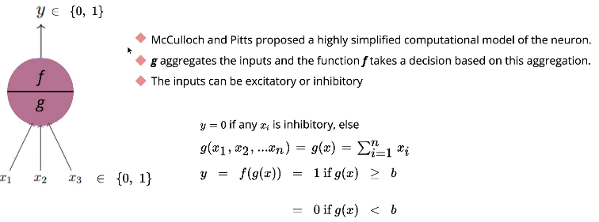
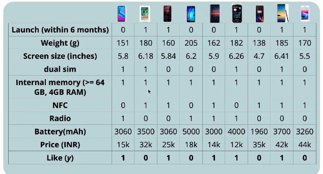
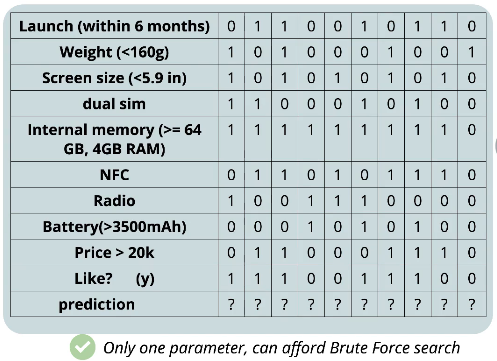
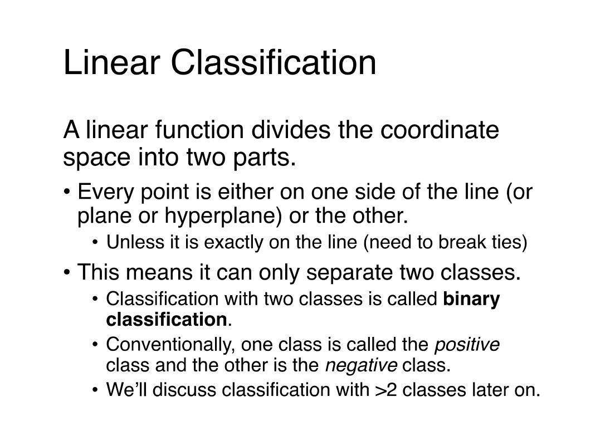
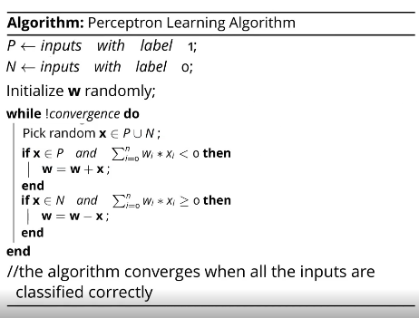
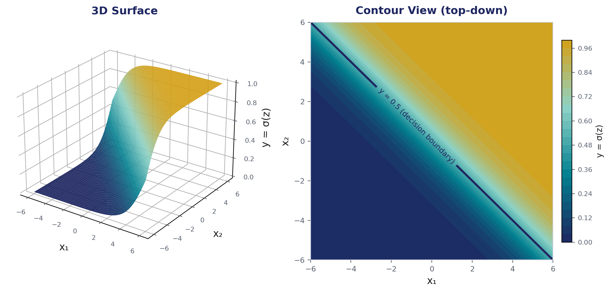
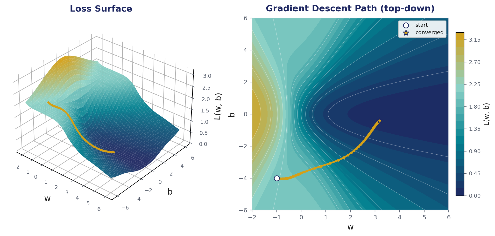

01 · Where the perceptron came from
Biological Neuron vs Perceptron — the MP Neuron
McCulloch (neuroscientist) and Pitts (logician) proposed the first highly simplified computational model of a neuron in 1943 — the McCulloch-Pitts (MP) Neuron. It's the direct ancestor of the perceptron.
A function g aggregates the inputs, and a function f takes a
decision based on that aggregation. Inputs can be excitatory or
inhibitory.
y = 0 if any xᵢ is inhibitory, else
g(x₁, x₂, …, xₙ) = g(x) = Σxᵢ
y = f(g(x)) = 1 if g(x) ≥ b
= 0 if g(x) < b

Worked example: will you like this phone?
A classic teaching example — predict whether a user likes a mobile phone
from a set of boolean features (launched recently, weight <160g, screen
size <5.9in, dual SIM, sufficient memory, NFC, radio, battery >3500mAh, price >20k).
The raw specs get converted into binary features, then the MP Neuron's single parameter
b (threshold) is found by brute-force search — since there's
only one parameter, this is affordable.

Geometric interpretation
With just 2 boolean features (screen size >5in, battery >2000mAh), the MP Neuron's
decision boundary Σxᵢ = b is literally a line separating the "like" points from
the "dislike" points in feature space.

Limitation of the MP Neuron: inputs must be boolean,
all inputs are weighted equally (no learned importance), and the threshold b has
to be set by hand/brute-force — there's no learning algorithm. This is exactly what the
Perceptron (next section) fixes: it introduces learnable weights per input.
02 · Weighted, learnable decisions
Perceptron & Linear Classification
A Perceptron is the simplest form of a neural network that makes decisions by combining inputs with weights and applying an activation function. Mainly used for binary classification — it forms the basic building block of many deep learning models.
- Takes multiple inputs and assigns weights to each
- Computes a weighted sum and applies a threshold
- Outputs either 0/1 (or +1/-1 by convention)
- Forms the foundation of larger neural networks
Weights
Learned during training, adjusting based on errors — act like importance scores for each feature. Control how much each input influences the output.
Bias (b)
A constant added to the weighted sum, shifting the decision boundary — lets the perceptron classify correctly even when all inputs are zero, and stops the boundary being forced through the origin. Controls when the perceptron activates.
Mathematically: weights tilt the decision line; bias shifts it up/down or left/right.
Linear classification
A linear function divides the coordinate space into two parts — every point is on one side of the line (or plane/hyperplane) or the other. This means it can only separate two classes — binary classification. One class is conventionally called positive, the other negative.
f(x) = 1 if wᵀx + b ≥ 0
f(x) = -1 if wᵀx + b < 0
By convention, ties (exactly 0) are broken in favor of the positive class. w
(instead of the "m" used for slope in plain linear regression) are called the
weights.

Worked example: predicting an ad click
Four binary features about a web user (searched "repair", searched "reviews", recent
purchase, clicked ads before) with learned weights [2.0, 8.0, -15.0, 5.0] and
bias -9.0:
wᵀx + b = 2·0 + 8·1 + -15·0 + 5·0 + -9 = 8 - 9 = -1 →
negative → prediction: No (won't click the ad) — makes sense: someone who
searched reviews but hasn't recently purchased a fridge is unlikely to click a refrigerator ad.
03 · Learning the weights
Training a Perceptron
What does an update rule do?
- If the classifier predicted negative but should've been positive —
adjust weights
wso the function value moves toward positive - If it predicted positive but should've been negative — shift weights so the value moves toward negative
The perceptron update rule:
wⱼ += η · (yᵢ − f(xᵢ)) · xᵢⱼ
| Symbol | Meaning |
|---|---|
wⱼ | weight of feature j |
yᵢ | true label of instance i |
xᵢ | feature vector of instance i |
f(xᵢ) | the class prediction for instance i |
xᵢⱼ | value of feature j in instance i |
η | the learning rate — how big a step each update takes |
If xᵢⱼ is 0, there's no update (that feature didn't affect this prediction). If
xᵢⱼ is negative, the sign of the update flips.
Perceptron learning algorithm
- Initialize all weights
wto 0 (or small random values) - Iterate through the training data — for each instance, classify it:
- If correct, do nothing
- If wrong, apply the update rule
- Repeat until the perceptron correctly classifies every instance, or a maximum number of iterations/epochs is reached
Linear separability: if the training instances aren't linearly separable, the classifier will always get some predictions wrong — you need a stopping criterion (max iterations/epochs), or the algorithm runs forever.

Implementation sketch (from scratch)
// Perceptron object function Perceptron(no, learningRate = 0.00001) { this.learnc = learningRate; this.bias = 1; this.weights = []; for (let i = 0; i <= no; i++) { this.weights[i] = Math.random() * 2 - 1; // random weight in [-1, 1] } } // Activation: threshold at 0 this.activate = function(inputs) { let sum = 0; for (let i = 0; i < inputs.length; i++) sum += inputs[i] * this.weights[i]; return sum > 0 ? 1 : 0; }; // Training: guess, compare, adjust this.train = function(inputs, desired) { inputs.push(this.bias); let guess = this.activate(inputs); let error = desired - guess; if (error != 0) { for (let i = 0; i < inputs.length; i++) this.weights[i] += this.learnc * error * inputs[i]; } };
04 · One hidden layer
Shallow Neural Networks
A shallow neural network has only one hidden layer between input and output — simpler than deep networks with multiple hidden layers. Despite their simplicity, shallow networks can approximate any function given sufficient neurons in the hidden layer — the Universal Approximation Theorem.
Input Layer
One neuron per feature of the input dataset.
Hidden Layer
Applies weights to inputs, passes through an activation function to introduce non-linearity.
Output Layer
A single neuron for regression; multiple neurons (one per class) for classification.
How shallow networks work
- Weighted sum: each hidden neuron computes a weighted sum of inputs
- Activation: passed through Sigmoid/Tanh/ReLU to add non-linearity
- Output generation: output layer integrates hidden-layer signals via another set of weights
Training: same 4-step loop as any network
- Forward Propagation — compute output for a given input
- Loss Calculation — measure distance from the desired output
- Backpropagation — compute gradients of the loss w.r.t. every weight
- Weight Update — adjust weights via an optimizer (e.g. gradient descent)
Code: shallow network for binary classification (Keras)
from sklearn.datasets import make_moons from sklearn.model_selection import train_test_split from tensorflow.keras.models import Sequential from tensorflow.keras.layers import Dense from tensorflow.keras.optimizers import Adam X, y = make_moons(n_samples=1000, noise=0.2, random_state=42) X_train, X_test, y_train, y_test = train_test_split(X, y, test_size=0.3) model = Sequential() model.add(Dense(10, input_shape=(2,), activation='relu')) # hidden layer, 10 neurons model.add(Dense(1, activation='sigmoid')) # output layer, binary model.compile(optimizer=Adam(learning_rate=0.01), loss='binary_crossentropy', metrics=['accuracy']) model.fit(X_train, y_train, epochs=100, validation_data=(X_test, y_test))
05 · How networks actually learn
Backpropagation
Backpropagation is an algorithm that trains neural networks by reducing prediction error — propagating errors backward, computing gradients via the chain rule, and updating weights/biases to improve performance. Scales well to deep, complex networks.
Two main steps
1️⃣ Forward Pass
- Input data passed to the input layer, forwarded through hidden layers
- Each neuron computes a weighted sum + bias
- Activation functions (e.g. ReLU) produce outputs
- Outputs of one layer become inputs to the next
- Final layer uses e.g. softmax to produce predictions
2️⃣ Backward Pass
- Error between predicted and actual output is calculated
- Gradients computed using the chain rule
- Weights and biases updated to reduce the error
- Process continues layer by layer, output → input
- Derivatives of activation functions drive the gradient computation
Error (e.g. Mean Squared Error):
MSE = (Predicted Output − Actual Output)²
06 · Introducing non-linearity
Activation Functions
An activation function is applied to the weighted sum of inputs before producing a neuron's final output. It introduces non-linearity — without it, a network of any depth behaves like a single linear model, since real-world data is rarely linearly separable.
| Function | Range | Notes |
|---|---|---|
| Linear | (−∞, +∞) | y = x. Stacking linear layers still collapses to one linear model — commonly used only in the output layer for regression. |
| Sigmoid | (0, 1) | S-shaped; smooth & continuous; steep gradient near x=0. Good for binary classification output. |
| Tanh | (−1, 1) | A shifted, zero-centered sigmoid — often preferred in hidden layers for easier downstream learning. |
| ReLU | [0, ∞) | A(x)=max(0,x). Computationally cheap, sparse activations, avoids vanishing gradients — default for hidden layers. |
| Softplus | (0, ∞) | A(x)=log(1+eˣ). Smooth version of ReLU, fully differentiable, no hard zero threshold. |
| ELU | (−α, ∞) | Behaves like ReLU for positive inputs, allows smooth negative values — reduces vanishing gradients. |
| SELU | (−λα, ∞) | Scaled ELU for self-normalizing networks — maintains near-zero mean/unit variance activations. |
| Softmax | (0, 1), sums to 1 | Converts raw scores into class probabilities — used in the output layer for multi-class classification. |
Impact on model performance
- ReLU trains faster by avoiding the vanishing gradient problem; Sigmoid/Tanh can slow convergence in deep networks
- ReLU maintains better gradient flow for deeper layers; Sigmoid may produce very small gradients
- Softmax handles multi-class outputs; ReLU/Leaky ReLU are the default for hidden layers
07 · From a hard threshold to a smooth decision
The Sigmoid Neuron
The perceptron's step function is all-or-nothing — it fires only 0 or 1, with no sense of "how strongly" it believes its output. This causes two real problems:
⚡ Abrupt, discontinuous jumps
A tiny change in weights/inputs can instantly flip the output from 0 to 1, making learning unstable.
🚫 Not differentiable
The step function's derivative is 0 almost everywhere (undefined at the threshold) — gradient descent has nothing to work with. The perceptron's update rule is a heuristic, not derived from minimizing a smooth loss.
Fix: replace the hard step with a smooth, bounded, differentiable curve — the sigmoid function.
Definition
y = σ(w·x + b) = 1 / (1 + e⁻⁽ʷˣ⁺ᵇ⁾)
where w = weight vector, x = input vector, b = bias,
z = w·x + b (pre-activation)
Unlike the perceptron, inputs and output are real-valued, not restricted to 0/1.
Key properties
With two inputs — a smooth surface
With z = w₁x₁ + w₂x₂ + b, the 1-D S-curve becomes a smooth S-shaped
sheet over the (x₁, x₂) plane. The 0.5 contour is a straight decision
boundary — sigmoid smooths the perceptron's sharp edge into a gradual transition around it.

Effect of w and b on the curve
| Change | Effect |
|---|---|
| w↑ (larger magnitude) | Curve becomes steeper — sharper 0→1 transition |
| w↓ (smaller magnitude) | Curve becomes gentler / flatter |
| w changes sign (+ → −) | Curve flips — becomes decreasing in x |
| b↑ (more positive) | Curve shifts left — activates for smaller x |
| b↓ (more negative) | Curve shifts right — activates for larger x |
Loss function & gradient descent
Squared error loss:
L(w, b) = ½ Σᵢ (yᵢ − f(xᵢ))² where f(xᵢ) = σ(w·xᵢ + b)
Because σ(z) is smooth and differentiable, L(w,b) is differentiable
too — gradients always exist. L(w,b) forms a smooth bowl-shaped surface over
parameter space; gradient descent walks downhill along it toward the minimum.

Gradient descent algorithm
# Model: sigmoid neuron prediction def f(w, b, x): return 1.0 / (1.0 + np.exp(-(w*x + b))) # Loss: squared error over all points def error(w, b): err = 0.0 for x, y in zip(X, Y): fx = f(w, b, x) err += 0.5*(fx - y)**2 return err # Gradients: partial derivatives of the loss def grad_w(w, b, x, y): fx = f(w, b, x) return (fx - y) * fx * (1 - fx) * x def grad_b(w, b, x, y): fx = f(w, b, x) return (fx - y) * fx * (1 - fx) # Update loop w, b, eta = -2, -2, 1.0 for i in range(1000): dw, db = 0, 0 for x, y in zip(X, Y): dw += grad_w(w, b, x, y) db += grad_b(w, b, x, y) w = w - eta * dw b = b - eta * db
Perceptron vs Sigmoid Neuron
| Aspect | Perceptron / MP Neuron | Sigmoid Neuron |
|---|---|---|
| Activation | Hard step function | Smooth sigmoid σ(z) |
| Output range | {0, 1} only | Continuous (0, 1) |
| Differentiable? | No (undefined at threshold) | Yes, everywhere |
| Sensitivity to input | Abrupt flip | Smooth, gradual change |
| Learning rule | Heuristic update rule | Gradient descent on a loss function |
The sigmoid neuron uses the same building blocks as the perceptron (w, x, b) — but a smooth, differentiable activation makes proper gradient-based learning possible.
08 · Making training actually converge
Optimization Algorithms
Optimization algorithms adjust a network's weights during training to minimize the loss — making predictions more accurate.
Gradient Descent
The most basic optimizer — updates weights by calculating the gradient of the loss function and stepping opposite to it.
Stochastic Gradient Descent (SGD)
Updates weights using one sample at a time — faster per step, but noisier convergence.
Adam (Adaptive Moment Estimation)
An efficient variant of gradient descent that adapts the learning rate per-weight — the default choice for most deep learning training today.
RMSprop
Adjusts the learning rate based on a running average of recent gradients — particularly useful for training RNNs.
09 · Tying it together
Feedforward Neural Networks (FFNN)
A Feedforward Neural Network is the simplest ANN architecture — data flows in one direction only, input → hidden layer(s) → output, with no loops or cycles (unlike RNNs). Every network covered in this unit — the single perceptron, the sigmoid neuron, and the shallow network — is a feedforward network:
- Single perceptron = the smallest possible FFNN (no hidden layer, one output neuron)
- Sigmoid neuron = the same FFNN structure, with a differentiable activation swapped in
- Shallow neural network = an FFNN with exactly one hidden layer
- Stack more hidden layers → a deep feedforward network
Training any FFNN follows the same loop covered across this unit: forward pass → compute loss → backpropagate the gradient → update weights via an optimizer (SGD/Adam/RMSprop) — repeated over many epochs until the loss converges.
Unit 2 — Summary
- The MP Neuron (1943) is the earliest neuron model — fixed weights, hand-set threshold, boolean-only inputs
- The Perceptron adds learnable weights — a linear classifier trained via the update rule
w += η(y−ŷ)x - Perceptrons can only solve linearly separable problems
- Shallow networks (1 hidden layer) can approximate any function, per the Universal Approximation Theorem
- Backpropagation + gradient descent is how every network — shallow or deep — actually learns
- Activation functions supply the non-linearity that makes multi-layer networks meaningfully more powerful than a single linear layer
- The Sigmoid Neuron fixes the perceptron's biggest flaw — non-differentiability — enabling real gradient-based training